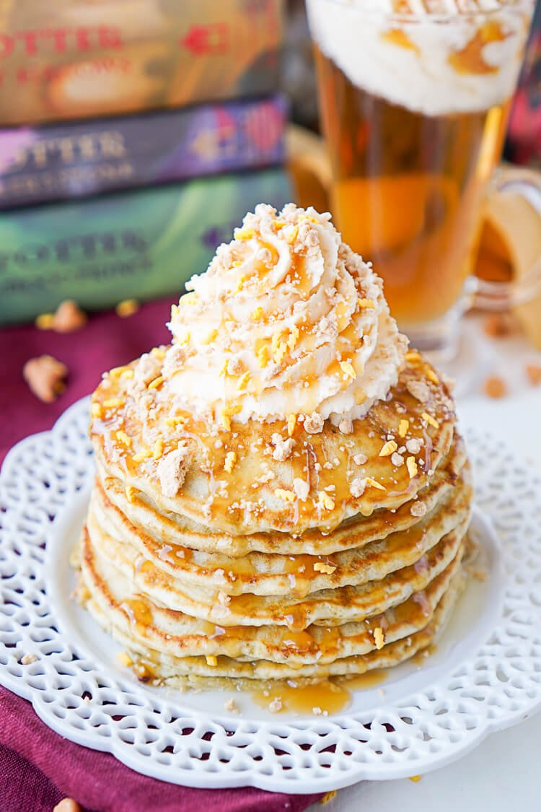

A pancake recipe inspired by the "Harry Potter" series
These Butterbeer Pancakes are loaded with caramel, butterscotch, vanilla, and butter flavor. They're the perfect nerdy start to your day or a great way to kick off The Chosen One's birthday!
Ingredients
- 1 cup butterscotch chips
- 2 and 1/4 cup all-purpose flour
- 4 tbsp granulated sugar
- 1 tsp baking powder
- 1/2 tsp baking soda
- 1/2 tsp salt
- 3/4 cup whole milk
- 1/2 cup ricotta cheese
- 1/2 cup caramel coffee creamer
- 2 large eggs
- 1/4 cup butter
- 1/3 cup buttermilk
- 1/2 cup sugar
- 1/2 tsp baking soda
- 1 tsp butter extract
- 1 cup heavy cream
- 1/4 cup powdered sugar
- 2 tbsp butterscotch instant pudding mix (dry)
Recipe instructions
- Add butterscotch chips to a food processor or blender and pulse until fine bits form.
- In a large bowl, combine flour, sugar, baking powder, baking soda, salt, and butterscotch chip crumbs.
- In a separate bowl, whisk together milk, ricotta, coffee creamer, and eggs. Add wet ingredients to dry ingredients and stir until just combined.
- Spray griddle or large pan with cooking spray and heat over medium heat.
- For the syrup, add butter, buttermilk, and sugar to a meduim saucepan. Stir together on medium heat until sugar has dissolved and butter has melted. Stir in baking soda and butter extract, let it rest a few minutes and it's ready to serve!
- For the whipped cream, whip all ingredients together in a medium bowl or stand mixer fitted with a whisk attachment until light and fluffy.
Return to top
Return to main page